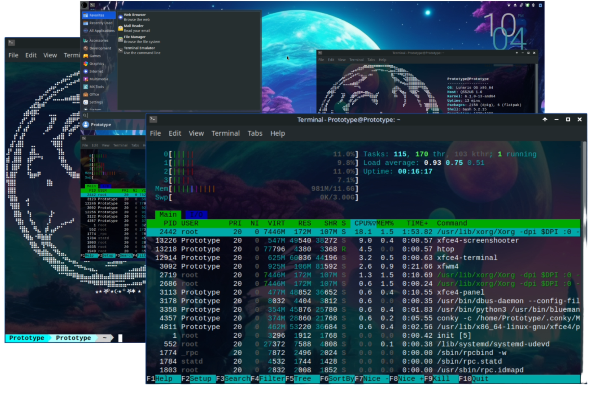

Pre-Installation
The pre-installation phase of a Linux operating system involves several essential steps to ensure a smooth installation process. Begin by verifying hardware compatibility and create a bootable installation medium, such as a USB drive. Adjust the BIOS or UEFI settings, including secure boot configurations, to facilitate the installation. Additionally, it's advisable to perform a backup of critical data to mitigate potential data loss. By diligently completing these preparatory tasks, users can optimize system compatibility and minimize the risk of issues during the Linux OS installation, fostering a seamless and successful deployment.